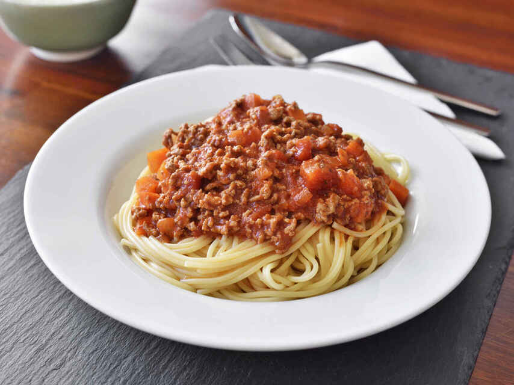

Pasta a la Bolognesa

Descripción
Preparacion de pasta con salsa Bolognesa, cambiando algunas cosas de la recerta original de la salsa. Su nombre
proviene de las comarcas de Bolonia, donde se acostumbra a realizar esta preparacion agregandole algunas hojas
de laurel y albahaca.
la receta que se indica en esta pagina web es propia y no es obligatorio seguirla al pie de la letra, si quiere
cambiar algo, añadir un ingrediente o quitar algo que no le guste, puede hacerlo y probar que tal quedó.
Ingredientes
- Cebolla cabezona y larga
- Zanahoria
- Tomate
- Pasta
- Carne molida
- Paprika
- Color
- Base para carne desmechada Maggi
Preparacion
- En una Sarten, poner a fuego bajo la cebolla con la zanahoria, un poco de Paprika y color
- Poner a hervir la pasta para que se cocine mientras cocinamos la pasta
- Agregar dos tomates rayados o cortados en cuadritos al guiso con cebolla y zanahoria
- Agregar la carne desmechaza al guiso y revolver, despues agregamos agua y dejamos cocinar hasta que se seque
- sacamos la pasta a una olla con agua fria y la pasamos a la preparacion del guiso